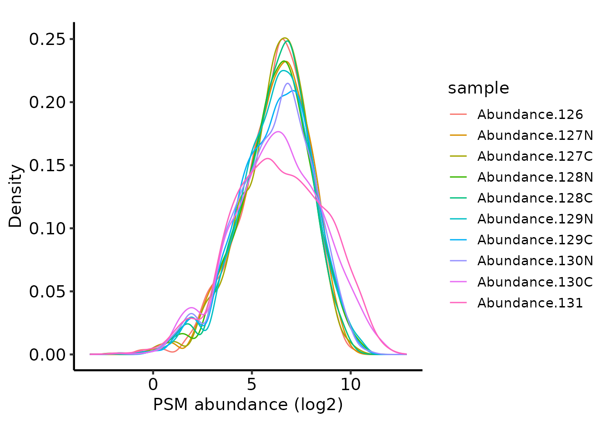
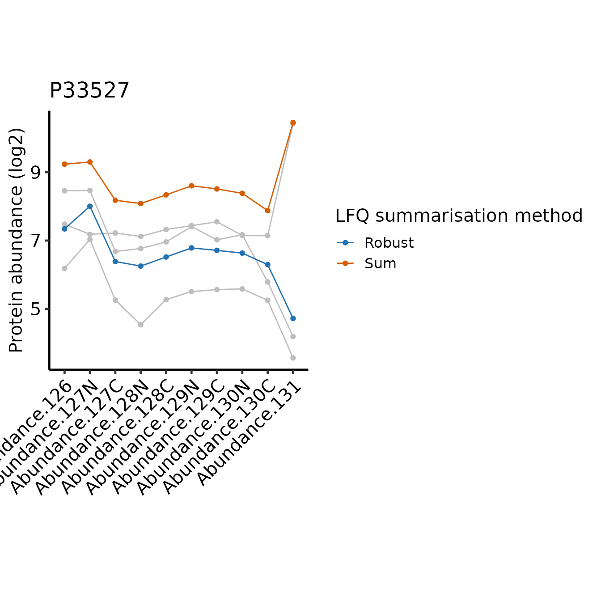

TMT QC PSM-level quantification and summarisation to protein-level abundance
Tom Smith
2025-02-18
TMT_PSM_QC_Summarisation.RmdQuantitative proteomics using isobaric tagging such as Tandem Mass Tags (TMT) has a considerable benefit over Label-Free Quantification (LFQ) in that up to 35 samples can be quantified for each Peptide Spectrum Match (PSM). This has multiple benefits over analysing samples in separate runs (LFQ):
- TMT reduces protein quantification variance since PSM-level quantification is derived from the same MS1 ion for all samples
- LFQ suffers from much higher missing values when comparing across samples due to the limited number of ions that can be fragmented in each run and the associated issue of peptides being identified in only a subset of runs (O’Connell et al. 2018). This is ameliorated to a significant degree by Data-Independent Aquisition (DIA) LFQ. However, DIA still involves quantifying each sample separately, so missing values are not entirely removed, and proteins in each sample may be quantified from different sets of peptides.
Because TMT quantifies from the same MS1 ion for all samples, this standardises the features quantified in each sample, which simplifies the comparison between samples and increases quantification accuracy of summarised features such as proteins.
However, TMT does suffer from ratio compression, which should be avoiding by performing quantification with SPS MS3 (McAlister et al. 2014).
Here, we will QC and filter the PSM level abundances from PD before summarising them to protein-level abundances.
Load required packages
To clarify which functionality is provided by which package, we will
use package::function. For your own code, there is no need
to specify the package unless you want to maintain this clarity.
Defining the contaminant proteins
We need to remove contaminant proteins. These were defined here using the cRAP database. Below, we parse the contaminants fasta to extract the IDs for the proteins in both ‘cRAP’ format and Uniprot IDs.
crap_fasta_inf <- system.file(
"extdata", "cRAP_20190401.fasta.gz",
package = "biomasslmb"
)
# Extract the protein IDs associated with each cRAP protein
crap_accessions <- biomasslmb::get_crap_fasta_accessions(crap_fasta_inf)
print(head(crap_accessions))
#> [1] "cRAP001" "P00330" "cRAP002" "P02768" "cRAP003" "P00883"Read in input data
We start by reading in quantitative proteomics data into a
QFeatures object, which is the standard Bioconductor object
for holding quantitative proteomics data. See here
for documentation about the QFeatures object.In this case,
we are not adding any experimental details to the QFeatures
object, so the ColData will be empty.
psm_tmt_total is a data set available from the
biomasslmb package containing the PSM-level output from
Proteome Discoverer (PD) for an experiment with 10 samples (each one
being a separate TMT tags). It is a truncated file containing the first
5,000 PSMs only. Here, we will not include any details about the
experimental design. Usually, these would be included by providing a
data.frame to the colData argument. See
?readQFeatures for full details on how to read the
quantification data in a QFeatures object.
tmt_qf <- QFeatures::readQFeatures(assayData = psm_tmt_total,
quantCols = 36:45,
name = "psms_raw")
#> Checking arguments.
#> Loading data as a 'SummarizedExperiment' object.
#> Formatting sample annotations (colData).
#> Formatting data as a 'QFeatures' object.
# Add a more accurate average S:N ratio value.
# The one calculated by PD doesn't treat NA values appropriately!
tmt_qf[['psms_raw']] <- update_average_sn(tmt_qf[['psms_raw']])We have 2 quantification values which are exactly zero. These should be replaced with NA, since mass spectrometry is not capable of asserting that the protein had zero abundance in the sample.
tmt_qf[['psms_raw']] <- QFeatures::zeroIsNA(tmt_qf[['psms_raw']])We first perform routine filtering to remove PSMs that:
- Could originate from contaminants. See
?filter_features_pd_ddafor further details, including the removal of ‘associated cRAP’. - Don’t have a unique master protein.
# Perform routine raw data filtering.
# - Remove PSMs from contaminant proteins
# - Remove PSMs where protein ID is empty or not unique
tmt_qf[['psms_filtered']] <- filter_features_pd_dda(tmt_qf[['psms_raw']],
crap_proteins=crap_accessions,
level='PSM',
TMT=TRUE,
filter_crap=TRUE,
filter_associated_crap=TRUE,
unique_master=TRUE, )
#> Filtering data...
#> 5000 features found from 2364 master proteins => Input
#> 242 cRAP proteins supplied
#> 60 proteins identified as 'cRAP associated'
#> 4933 features found from 2346 master proteins => cRAP features removed
#> 4924 features found from 2340 master proteins => associated cRAP features removed
#> 4922 features found from 2339 master proteins => features without a master protein removed
#> 4748 features found from 2242 master proteins => features with non-unique master proteins removed
#> 4747 features found from 2242 master proteins => features without quantification removedNormalise
Next, we plot the peptide intensities to check they are approximately
the same using biomasslmb::plot_quant.
# Plot the peptide-level quantification distributions per sample
biomasslmb::plot_quant(tmt_qf[['psms_filtered']],
log2transform=TRUE,
method='density') +
theme_biomasslmb() +
xlab('PSM abundance (log2)')Since the same amount of sample was labelled in each case, it’s
reasonable to use ‘diff.median’ normalisation with
QFeatures::normalize. First though, we need to
log-transform the abundances so the normalisation works as expected. We
exponentiate the quantification values back to the original scale
(reverse the log-transformation) afterwards, since the downstream steps
including summarisation to protein require non-transformed values
# Normalise the log2-transformed abundances using diff.median
tmt_qf[['psms_filtered_norm']] <- QFeatures::normalize(
logTransform(tmt_qf[['psms_filtered']], base=2), method='diff.median')
# Exponentiate the quantification values back to the initial scale.
assay(tmt_qf[['psms_filtered_norm']]) <- 2^assay(tmt_qf[['psms_filtered_norm']])
# Plot the peptide-level quantification distributions per sample
biomasslmb::plot_quant(tmt_qf[['psms_filtered_norm']],
log2transform=TRUE,
method='density') +
theme_biomasslmb() +
xlab('PSM abundance (log2)')
Removing low quality PSMs
We want to remove low Signal:Noise (S:N) PSMs, since the
quantification values will be less accurate and there will be more
missing values. We can inspect the relationship between S:N and missing
values using the plot_missing_SN function.
Note that where the signal:noise > 10, there are far fewer missing values.
plot_missing_SN(tmt_qf[['psms_filtered_norm']], bins = 30)Missing values per PSM, in relation to the signal:noise ratio
We can also look into this relationship at the tag level using
plot_missing_SN_per_sample to inspect whether there was a
labeling issue with any particular tag. In this case, there is no tag
which appears to have a high proportion of missing values when
signal:noise > 10.
plot_missing_SN_per_sample(tmt_qf[['psms_filtered_norm']], bins = 30)
Missing values per tag, in relation to the signal:noise ratio
Based on the above, we will filter the PSMs to only retain those with
S:N > 10 using filter_TMT_PSMs since these PSMs are
clearly much closer to the limit of detection for the MS and therefore
likely to contain less accurate quantification data. Note that this only
necessitates removing ~ 1/20 of the PSMs in this case. Using the same
function, we will also remove PSMs with interference/co-isolation
>50% since these are also likely to contain less accurate
quantification data.
# Then filter PSMs to remove low S:N and/or high interference
tmt_qf[['psms_filtered_norm']] <- filter_TMT_PSMs(tmt_qf[['psms_filtered_norm']],
inter_thresh=50, sn_thresh=10)
#> Filtering PSMs...
#> 4747 features found from 2242 master proteins => Initial PSMs
#> 4747 features found from 2242 master proteins => Removing PSMs without quantification values
#> 4628 features found from 2206 master proteins => Removing PSMs with high Co-isolation/interference
#> 4470 features found from 2178 master proteins => Removing PSMs with low average S:N ratioSummarising to protein-level abundances
Now that we have inspected the PSM-level quantification and filtered the PSMs, we can summarise the PSMs to protein-level abundances.
For PSM to protein summarisation with TMT quantification, simply
summing together the PSM-level abundances provides accurate estimates,
so long as there are no missing values. If many missing values are
present, the MsCoreUtils::robustSummary method may be
preferred, since it is able to summarise accurately, even in the
presence of missing values (Sticker et al.
2020).
We will see both approaches here, since the later approach requires some additional steps to ensure it is performed appropriately and the comparison between them is informative when considering what it means to summarise from PSMs to protein level abundances.
Summarisation with sum
We start by aggregating our PSMs using a simple sum. First, we need
to deal with missing values. If we leave the missing values in, we
either need to allow some protein quantifications to be NA,
or else ignore the missing values in the summarisation, which will
potentially mean different PSMs are summed for the a given protein
across the samples. Here, we will therefore remove all PSMs with missing
values.
tmt_qf[['psms_filtered_forSum']] <- QFeatures::filterNA(
tmt_qf[['psms_filtered_norm']], 0)Next, we will remove PSMs for proteins with fewer than 2 PSMs. This is a common filter in proteomics to ensure the protein-level quantifications are derived from at least two independent observations. In some cases, for example phosphoproteomics, or where this filter appears to be too stringent, it may be appropriate to skip it.
min_psms <- 2
tmt_qf[['psms_filtered_forSum']] <- biomasslmb::filter_features_per_protein(
tmt_qf[['psms_filtered_forSum']], min_features = min_psms)Finally, we perform the summarisation.
# Aggregate to protein-level abundances (using QFeatures function)
tmt_qf <- QFeatures::aggregateFeatures(tmt_qf,
i = "psms_filtered_forSum",
fcol = "Master.Protein.Accessions",
name = "protein_sum",
fun = base::colSums)
#> Your row data contain missing values. Please read the relevant
#> section(s) in the aggregateFeatures manual page regarding the effects
#> of missing values on data aggregation.
tmt_qf[['protein_sum']] <- QFeatures::logTransform(
tmt_qf[['protein_sum']], base=2)Summarisation with robustSummary
In most instances, for TMT proteomics, summarisation with
sum will be sufficient. However, there may be cases where
the need to remove missing values for sum summarisation
removes too many PSMs. In this case, an alternative summarisation
approach using robustSummary (Sticker et al. 2020) may be appropriate.
With robustSummary, we do not need to remove all PSMs
with missing values since the summarisation algorithm deals with them
appropriately. However, we still don’t want to retain PSMs with too many
missing values, since these will not be very informative in estimating
the protein-level quantification. Here, we will retain PSMs with at most
2/10 missing values
tmt_qf[['psms_filtered_forRobust']] <- QFeatures::filterNA(
tmt_qf[['psms_filtered_norm']], 0.2)Next, we again remove PSMs for proteins with fewer than 2 PSMs.
tmt_qf[['psms_filtered_forRobust']] <- biomasslmb::filter_features_per_protein(
tmt_qf[['psms_filtered_forRobust']], min_features = min_psms)For the robustSummary summarisation, we need our
quantification values to be approximately Gaussian distributed. Hence,
we log transform them.
tmt_qf[['psms_filtered_forRobust']] <- QFeatures::logTransform(
tmt_qf[['psms_filtered_forRobust']], base=2)Now we can summarise with robustSummary
# Aggregate to protein-level abundances (using QFeatures function)
tmt_qf <- QFeatures::aggregateFeatures(tmt_qf,
i = "psms_filtered_forRobust",
fcol = "Master.Protein.Accessions",
name = "protein_robust",
fun = MsCoreUtils::robustSummary,
maxit=1000)
#> Your quantitative and row data contain missing values. Please read the
#> relevant section(s) in the aggregateFeatures manual page regarding the
#> effects of missing values on data aggregation.Prior to summaristaion, we removed PSMs from proteins with fewer than
2 PSMs. However, since we left in PSMs with missing values, it’s
possible for some protein-level abundances to be derived from just a
single PSM. We can use the get_protein_no_quant_mask from
biomasslmb to identify where the protein abundances will be
derived from fewer than n features (PSMs). We can then give
this mask to mask_protein_level_quant to replace these
quantification values with NA.
# plot = TRUE means we will also get a plot of the number of proteins quantified in each sample
protein_retain_mask <- biomasslmb::get_protein_no_quant_mask(
tmt_qf[['psms_filtered_forRobust']], min_features=2, plot=TRUE)
tmt_qf[['protein_robust']] <- biomasslmb::mask_protein_level_quant(
tmt_qf[['protein_robust']], protein_retain_mask)Comparing the summarisation approaches
We can see that performing the robust summarisation allows us to retain more proteins, since we can still use the PSMs with a low number of missing values.
However, with sum summarisation, we have complete quantification data
(no missing values), whereas with robustSummary, we will
proteins with missing values in some samples. In this case, the
protein-level data is 99.68 % complete, so the impact of the missing
values on the downstream analysis will be minimal. We can inspect
missing values using the QFeatures::nNA function, or just
is.na on the quantitative data matrix.
QFeatures::nNA(tmt_qf[['protein_sum']])$nNAcols
#> DataFrame with 10 rows and 3 columns
#> name nNA pNA
#> <character> <integer> <numeric>
#> 1 Abundance.... 0 0
#> 2 Abundance.... 0 0
#> 3 Abundance.... 0 0
#> 4 Abundance.... 0 0
#> 5 Abundance.... 0 0
#> 6 Abundance.... 0 0
#> 7 Abundance.... 0 0
#> 8 Abundance.... 0 0
#> 9 Abundance.... 0 0
#> 10 Abundance.... 0 0
QFeatures::nNA(tmt_qf[['protein_robust']])$nNAcols
#> DataFrame with 10 rows and 3 columns
#> name nNA pNA
#> <character> <integer> <numeric>
#> 1 Abundance.... 0 0.00000000
#> 2 Abundance.... 0 0.00000000
#> 3 Abundance.... 1 0.00109051
#> 4 Abundance.... 4 0.00436205
#> 5 Abundance.... 1 0.00109051
#> 6 Abundance.... 3 0.00327154
#> 7 Abundance.... 0 0.00000000
#> 8 Abundance.... 2 0.00218103
#> 9 Abundance.... 7 0.00763359
#> 10 Abundance.... 11 0.01199564
message(sprintf('%.2f %% missing values', 100*mean(
is.na(assay(tmt_qf[['protein_robust']])))))
#> 0.32 % missing valuesTo better understand the difference between how the two summarisation
methods use the available data, we can inspect the single protein which
has no missing values with robustSummary, but is not
summarised with sum.
# Identify the proteins with no missing values present only following robustSummary
protein_robust_proteins <- rownames(filterNA(tmt_qf[['protein_robust']]))
protein_sum_proteins <- rownames(filterNA(tmt_qf[['protein_sum']]))
no_missing_robustSummary_only <- setdiff(protein_robust_proteins, protein_sum_proteins)
print(no_missing_robustSummary_only)
#> [1] "P22695"If we inspect the PSM level abundances for this protein, we see that
there are 3 PSMs, of which the first two contain missing values in a
single sample. Thus, we have only one complete PSM, which is
insufficient for confident summarisation using sum.
However, all 3 PSMs have sufficiently few missing values to be used with
the robustSummary method and all samples have at least two
non missing values across the 3 PSMs, so this protein is quantified in
all samples with robustSummary.
retain_psms <- rowData(
tmt_qf[['psms_filtered_norm']])$Master.Protein.Accessions==no_missing_robustSummary_only
assay(tmt_qf[['psms_filtered_norm']][retain_psms,])
#> Abundance.126 Abundance.127N Abundance.127C Abundance.128N Abundance.128C
#> 517 114.68442 158.2849 286.0687 438.4889 173.5508
#> 1686 587.11851 412.1598 322.1113 232.8183 1419.0267
#> 3597 89.15436 134.5185 212.4164 336.5223 139.6542
#> Abundance.129N Abundance.129C Abundance.130N Abundance.130C Abundance.131
#> 517 41.27858 15.23801 10.07546 NA NA
#> 1686 494.28845 NA 23.85513 33.861821 58.181084
#> 3597 31.63687 24.65788 17.03938 4.108757 8.366749We can directly compare the protein-level abundance estimates to explore where these two summarisation methods differ in their estimates.
# Define a function to extract the protein abundances in long form and
# add a column annotating the method
get_long_form_prot_exp <- function(obj, method_name) {
assay(obj) %>%
data.frame() %>%
tibble::rownames_to_column('protein') %>%
pivot_longer(cols=-protein) %>%
mutate(method = method_name)
}
# Single object with protein inference from both methods
compare_protein_abundances <- rbind(
mutate(longFormat(tmt_qf[['protein_sum']]), method='Sum'),
mutate(longFormat(tmt_qf[['protein_robust']]), method='Robust')
)
print(head(compare_protein_abundances))
#> rowname colname value method
#> 1 A1L0T0 Abundance.126 8.340996 Sum
#> 2 A4D1E9 Abundance.126 9.674770 Sum
#> 3 A6NHR9 Abundance.126 10.319013 Sum
#> 4 O00116 Abundance.126 6.884527 Sum
#> 5 O00154 Abundance.126 5.597842 Sum
#> 6 O00159 Abundance.126 10.410898 SumWe want to identify the proteins with the lowest correlation for abundances across the samples between the two methods.
proteins_of_interest <- compare_protein_abundances %>%
pivot_wider(names_from = method, values_from = value) %>%
group_by(rowname) %>%
summarise(cor=cor(Sum, Robust)) %>%
slice_min(cor, n=5) %>%
pull(rowname)Below, we define a function to plot the peptide and protein level abundances for a single protein.
plot_pep_and_protein <- function(protein_of_interest) {
to_plot_compare <- compare_protein_abundances %>%
filter(rowname == protein_of_interest)
QFeatures::filterFeatures(
tmt_qf,
VariableFilter("Master.Protein.Accessions",
protein_of_interest,
condition = "=="))[['psms_filtered_norm']] %>%
longFormat() %>%
ggplot(aes(x = colname, y = log2(value))) +
geom_line(aes(group = rowname), colour = 'grey') +
geom_point(colour = 'grey') +
geom_line(data = to_plot_compare,
aes(x = colname, y = value, colour = method, group = method)) +
geom_point(data = to_plot_compare,
aes(x = colname, y = value, colour = method)) +
scale_colour_manual(values = get_cat_palette(2),
name = 'LFQ summarisation method') +
theme_biomasslmb(base_size = 15, border = FALSE, base_family = 'sans') +
theme(axis.text.x = element_text(angle = 45, vjust = 1, hjust = 1)) +
labs(
title = protein_of_interest,
x = '',
y = 'Protein abundance (log2)'
)
}In the plots below, PSM level quantifications are in grey and the summarised protein-level abundances are in colours. You can disregard the y-axis scale when comparing between the methods, or between the protein and peptide level abundances. The important thing to focus on is the abundance profile between the tags for any one summarisation method or PSM.
for(poi in proteins_of_interest) print(plot_pep_and_protein(poi))
In the first 4 cases, the protein-level quantification values are
relatively similar, with the exception of the final tag, where we see
clear disagreement between the PSMs for how abundant the tag is relative
to the other tags. Since sum simply adds together the
abundance values across the PSMs for a given tag and the abundance
values may be across multiple orders of magnitude, the protein-level
abundance pattern across the tags is weighted towards the most abundant
PSMs. This is likely to be a positive attribute, since the most abundant
PSMs will be more accurately quantified. However, the summarisation is
also sensitive to high abundance outliers. On the other hand,
robustSummary is less sensitive to outliers, but it treats
all PSMs equally. In the final example (P29692) we can see how this can
lead to potential inaccuracies when we have only 2 PSMs and one is very
low intensity. For example, tag 129C is mid-range intensity compared to
the other tags for the abundant PSM, but very low for the less abundant
PSM. This has almost no impact on the sum summarise protein
abundance, but a large impact when we use robustSummary
Summary
Here, we have QCed the PSMs and filtered them in the following steps:
- Remove PSMs that are likely from contaminants
- Remove PSMs without a unique ‘master protein’
- Remove PSMs without any quantification values
- Normalise the abundance values so they have the same median value in all samples
- Remove PSMs with very low signal:noise
- Remove PSMs with high interference
We then summarised the PSM level abundances with two approaches,
sum and robustSummary, before comparing the
protein-level abundances obtained with each of them.
robustSummary handles missing values and therefore enables
more proteins to be quantified. sum is sensitive to
outliers with very high abundance, while robust is more
sensitive to outliers with very low abundance.
sessionInfo()
#> R version 4.4.2 (2024-10-31)
#> Platform: x86_64-pc-linux-gnu
#> Running under: Ubuntu 24.04.1 LTS
#>
#> Matrix products: default
#> BLAS: /usr/lib/x86_64-linux-gnu/openblas-pthread/libblas.so.3
#> LAPACK: /usr/lib/x86_64-linux-gnu/openblas-pthread/libopenblasp-r0.3.26.so; LAPACK version 3.12.0
#>
#> locale:
#> [1] LC_CTYPE=C.UTF-8 LC_NUMERIC=C LC_TIME=C.UTF-8
#> [4] LC_COLLATE=C.UTF-8 LC_MONETARY=C.UTF-8 LC_MESSAGES=C.UTF-8
#> [7] LC_PAPER=C.UTF-8 LC_NAME=C LC_ADDRESS=C
#> [10] LC_TELEPHONE=C LC_MEASUREMENT=C.UTF-8 LC_IDENTIFICATION=C
#>
#> time zone: UTC
#> tzcode source: system (glibc)
#>
#> attached base packages:
#> [1] stats4 stats graphics grDevices utils datasets methods
#> [8] base
#>
#> other attached packages:
#> [1] dplyr_1.1.4 tidyr_1.3.1
#> [3] ggplot2_3.5.1 biomasslmb_0.0.1
#> [5] QFeatures_1.16.0 MultiAssayExperiment_1.32.0
#> [7] SummarizedExperiment_1.36.0 Biobase_2.66.0
#> [9] GenomicRanges_1.58.0 GenomeInfoDb_1.42.3
#> [11] IRanges_2.40.1 S4Vectors_0.44.0
#> [13] BiocGenerics_0.52.0 MatrixGenerics_1.18.1
#> [15] matrixStats_1.5.0
#>
#> loaded via a namespace (and not attached):
#> [1] DBI_1.2.3 rlang_1.1.5 magrittr_2.0.3
#> [4] clue_0.3-66 compiler_4.4.2 RSQLite_2.3.9
#> [7] png_0.1-8 systemfonts_1.2.1 vctrs_0.6.5
#> [10] reshape2_1.4.4 stringr_1.5.1 ProtGenerics_1.38.0
#> [13] pkgconfig_2.0.3 crayon_1.5.3 fastmap_1.2.0
#> [16] XVector_0.46.0 labeling_0.4.3 rmarkdown_2.29
#> [19] UCSC.utils_1.2.0 visdat_0.6.0 ragg_1.3.3
#> [22] purrr_1.0.4 bit_4.5.0.1 xfun_0.50
#> [25] zlibbioc_1.52.0 cachem_1.1.0 jsonlite_1.8.9
#> [28] blob_1.2.4 DelayedArray_0.32.0 cluster_2.1.6
#> [31] R6_2.6.1 bslib_0.9.0 stringi_1.8.4
#> [34] genefilter_1.88.0 jquerylib_0.1.4 Rcpp_1.0.14
#> [37] knitr_1.49 BiocBaseUtils_1.8.0 Matrix_1.7-1
#> [40] splines_4.4.2 igraph_2.1.4 tidyselect_1.2.1
#> [43] abind_1.4-8 yaml_2.3.10 lattice_0.22-6
#> [46] tibble_3.2.1 plyr_1.8.9 withr_3.0.2
#> [49] KEGGREST_1.46.0 evaluate_1.0.3 desc_1.4.3
#> [52] survival_3.7-0 Biostrings_2.74.1 pillar_1.10.1
#> [55] corrplot_0.95 generics_0.1.3 munsell_0.5.1
#> [58] scales_1.3.0 xtable_1.8-4 glue_1.8.0
#> [61] lazyeval_0.2.2 tools_4.4.2 robustbase_0.99-4-1
#> [64] annotate_1.84.0 fs_1.6.5 XML_3.99-0.18
#> [67] grid_4.4.2 cutr_0.0.0.9000 MsCoreUtils_1.18.0
#> [70] AnnotationDbi_1.68.0 colorspace_2.1-1 GenomeInfoDbData_1.2.13
#> [73] naniar_1.1.0 cli_3.6.4 textshaping_1.0.0
#> [76] S4Arrays_1.6.0 AnnotationFilter_1.30.0 gtable_0.3.6
#> [79] DEoptimR_1.1-3-1 sass_0.4.9 digest_0.6.37
#> [82] SparseArray_1.6.1 htmlwidgets_1.6.4 farver_2.1.2
#> [85] memoise_2.0.1 htmltools_0.5.8.1 pkgdown_2.1.1
#> [88] lifecycle_1.0.4 httr_1.4.7 bit64_4.6.0-1
#> [91] MASS_7.3-61